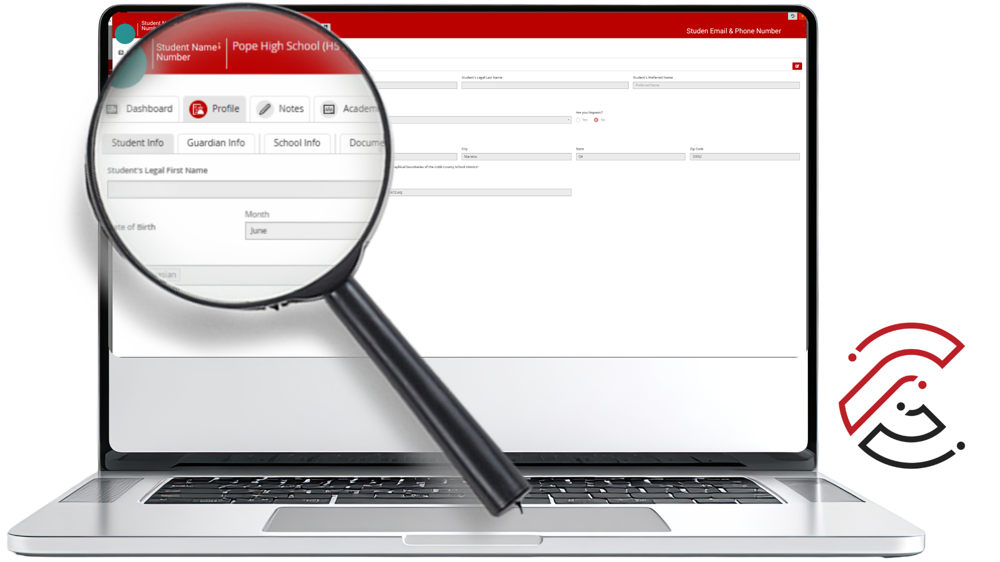
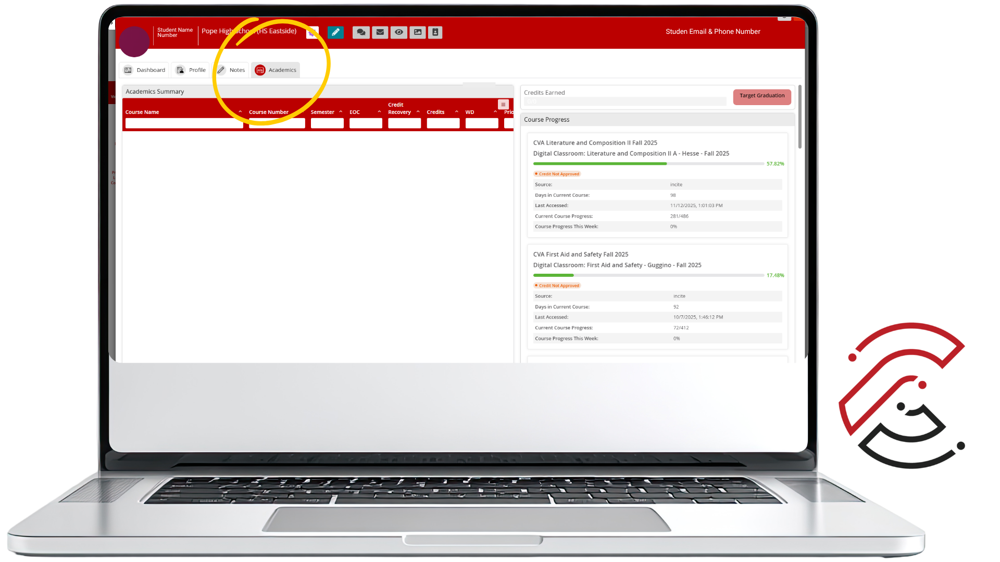
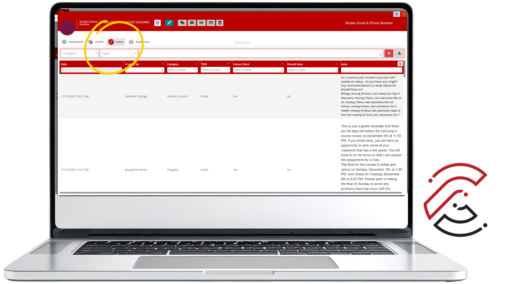

Views & Tools
The Views & Tools area gives you powerful insights into your students: information that makes it easier to understand and support your students. You'll see where to find student, guardian, and school details; how to check academic progress at a glance; and how to use notes to keep track of important context shared by families or other CVA teachers. You'll also learn about handy features—like Impersonating Students—that can help you troubleshoot, clarify questions, and communicate more accurately.
Big Idea: These tools don't just keep you organized. They help you understand who your students are, what they need, and how you can support them more effectively. The more comfortable you are with these tools, the easier it becomes to personalize communication, spot concerns early, and strengthen the partnership between teachers, students, families, and CVA support staff.
What Is Views & Tools?
Views & Tools is a dedicated section in CTLS that brings together student data, progress information, and communication management features in one place. It sits in the left-hand navigation of your CTLS Classroom, helping you respond quickly and teach with intention.
How to Access Views & Tools
Views & Tools is available directly from your CTLS Classroom or Dashboard. You can access it at any time from the left-hand navigation menu.

As you move through this material, take a few minutes to explore Views & Tools in your own class. This is your chance to build confidence with the systems you use every day and ensure every student gets the attention and care they deserve.
What You Will Find
Views & Tools brings together several features that work together to give you a complete picture of your students. Each one surfaces a different layer of information to help you act with intention.
Student Information and Guardian information

Let's take a quick look at the Student Info section. When you scroll down, you'll see the student's preferred email address. This is a good way to reach them directly, butt's always worth double-checking that email before sending important messages or feedback. This is the email address that was entered when the students enrolled.
From there, click over to Guardian Info. You'll find contact details for parents and guardians, including phone numbers and emails. This section comes in handy when you need to share academic updates or start a support conversation.
Look at School Info. This tells you where the student chose to work on the course during registration—at home, at school, or a mix of the two. Knowing their learning environment gives you helpful context as you support them throughout the term. A quick review of these details now can make your communication more personal and your support even more effective.
Progress Tracker Review

The Academics section is where you'll find the Progress Tracker Preview tiles—your quick-glance view of how each student is moving through their CVA courses. When you hover over a tile, you'll see the student's current percent completion. It's an easy way to spot who's pacing well and who might need a check-in or a little encouragement to get back on track. And here's a helpful shortcut: click any tile to jump straight into the student's full Progress Tracker. That's where you can dig into assignment-level details, pacing information, and overall performance—all in one place.
Adding Notes in Views & Tools

The Notes section holds some of the most valuable information you can gather about your students. Think of it as both a personal reference point and a shared space where insights from other CVA teachers live. It's a running record that helps everyone who works with that student stay in the loop.
These notes can be especially useful when you're reviewing progress or checking for academic integrity concerns. If a student or guardian shares something important, such as health concerns, family updates, or challenges that might affect their work, you can document it in the Notes section.
The more context we have, the better we can guide students, encourage them, and respond to what they need for success. Notes should be clear, professional, and focused on information that helps CVA staff support the student. Only include information that is relevant to the student's learning, participation, communication, or support needs.
Category Tags
Notes in Views & Tools help CVA teachers and staff document important student information in one consistent location. Category tags make notes easier to organize, locate, and understand when staff members need to review student history, support needs, communication, or concerns.
Review the Note Category Tags
Use the accordion folders below to review how each note category tag should be used in Views & Tools. Click or tap a folder title to expand it. Click or tap the title again to collapse it.
Student Support & Progress Tags
Use these tags to document student support, progress concerns, help sessions, and positive student milestones.
Failure Concern
Use this tag to record when you have reached out to a student or their family about failure concerns.
Help Session
Use this tag whenever you provide guidance, clarification, or tutoring to a student, or communicate with a family to support the student's progress. Include the focus of the session and any next steps or follow-up needed.
Student Success Highlight
Use this tag to record when you reach out to acknowledge a student's accomplishment, growth, or milestone. Include the nature of the success and any feedback shared.
Academic Concern Tags
Use this tag when documenting academic concerns that may need to be monitored or reviewed by CVA staff.
Academic Integrity
Used to document and monitor concerns related to academic integrity. This tag helps identify patterns or repeated issues, allowing teachers and staff to respond consistently and collaboratively to support student growth and uphold expectations.
Student Record & Profile Tags
Use these tags when documenting information that helps keep student records accurate or supports appropriate participation in the course.
Profile Updates
Use this tag to note important updates that help keep student records accurate and ensure CVA can communicate effectively with families.
Medical/Health Information
Use this tag to note any medical or health information that affects a student's learning or participation. Include details that help staff provide accommodation or support, while maintaining student privacy.
CVA Staff-Only Tags
These tags are for CVA staff use only. They should be used when documenting enrollment-related situations or communication with local school contacts.
Enrollment
This tag is for CVA staff use only. Use it to note any important enrollment-related situations such as schedule changes, late enrollment, withdrawals, or unique circumstances.
Local School Contact
This tag is for CVA staff only. Use it to record any communication with a student's local school contacts, including key details and next steps.
Teaching with Intention
In an asynchronous online course, the data in Views & Tools is often the earliest signal you have that a student needs support. A student who stops showing up in the roster data, falls behind on progress, or accumulates missing work needs outreach, not a waiting period. Regular use of Views & Tools is what makes proactive, student-centered teaching possible at CVA.
What to Remember
Views & Tools lives in the CTLS left navigation. Access it from any class in My Digital Classrooms.
Check Views & Tools regularly, not just when something seems wrong. Consistent use is what lets you catch concerns early.
These tools don't just keep you organized — they help you understand who your students are, what they need, and how you can support them more effectively.
Tag all Notes correctly to ensure teachers and staff respond consistently to support student growth and uphold expectations.
Academic Integrity
Use for academic integrity concerns, patterns, or repeated issues that need documentation.
Failure Concern
Use when you contact a student or family about course progress, failing grades, or risk of not passing.
Help Session
Use when you provide guidance, clarification, tutoring, or family support. Include the focus and next steps.
Student Success Highlight
Use to document student growth, accomplishments, milestones, or positive communication.
Medical/Health Information
Use for health information that affects learning or participation. Include only relevant support details.
Profile Updates
Use for updates that help keep student records accurate and support communication with families.
Enrollment Staff Only
For CVA staff use only. Used for schedule changes, late enrollment, withdrawals, or unique enrollment circumstances.
Local School Contact Staff Only
For CVA staff use only. Used to document communication with local school contacts, including key details and next steps.
Have Questions?
We're here to support you. If you have questions about Views & Tools or anything else in CTLS, contact CVA Teacher Support.